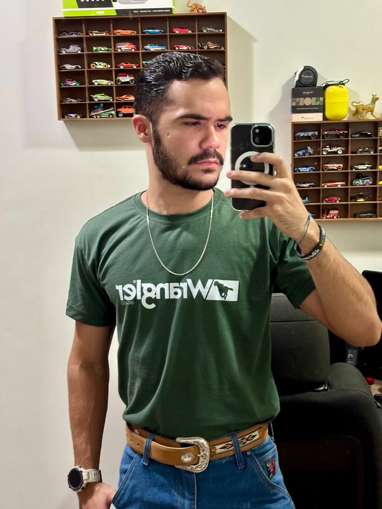

Currículo

Luiz Gustavo
Meu nome é Luiz Gustavo Garbelini Ramos, estudante do segundo período de Análise e Desenvolvimento de Sistemas na Universidade Tecnológica Federal do Paraná UTFPR. Sou natural de Sertaneja - PR, tenho 20 anos e sou apaixonado por tecnologia e inovação, com foco na criação de software e no desenvolvimento de sistemas computacionais.
Atualmente, trabalho em um HUB voltado para projetos de interiores, onde desenvolvo habilidades multidisciplinares e aplico meus conhecimentos técnicos na área de tecnologia.
Estou sempre em busca de aprimorar minhas habilidades em programação, arquitetura de sistemas e boas práticas de desenvolvimento, com o objetivo de criar soluções inovadoras e eficientes.